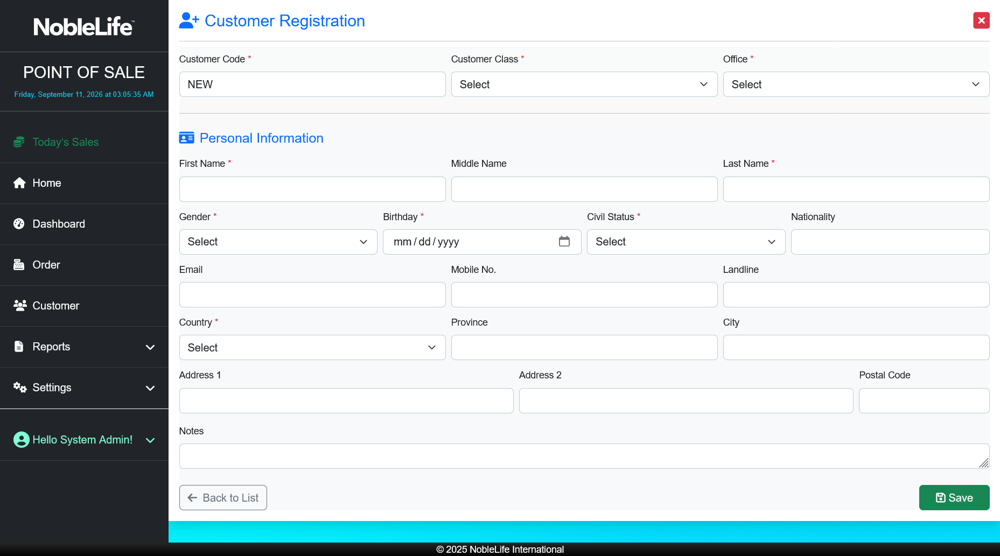

Customers
Use Customer to search for a customer, review their profile, or register a new customer.
Find a customer
- Select Customer in the navigation. Expected result: The Customers list opens.
- Enter a name or other search text in Search..., or choose a country filter. Expected result: The list narrows to matching records.
- Open the customer's details. Expected result: The customer profile appears.
- Choose Customer Information or Order History to review the profile or recorded orders.
 Figure: Search or filter customers from the Customers list (screenshot to be added)
Figure: Search or filter customers from the Customers list (screenshot to be added)
Figure: Review customer information and the orders recorded for that customer (screenshot to be added)
Register a customer
- In Customer, select New Customer. Expected result: Customer Registration opens.
- Choose Customer Class and Office. Expected result: The customer is associated with the right class and office.
- Enter the required First Name, Last Name, Gender, Birthday, and Civil Status. Expected result: The required personal information is complete.
- Choose Country and enter any available contact or address details. Expected result: The contact and address information is ready to save.
- Select Save. Expected result: The customer is saved and can be selected for an order.

Figure: Complete the required identity, customer class, office, and country fields.During checkout, you can also open Search Customer and select New Customer. Search by name, customer ID, email, or mobile number to find an existing record.
Figure: Search for an existing customer before creating a new record (screenshot to be added)
Use the edit and details actions on the customer list to maintain a profile. Deletion availability depends on the access assigned to your account.